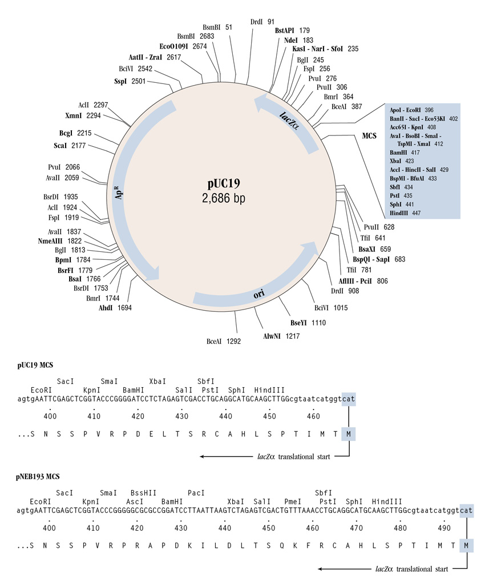
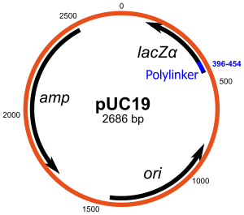
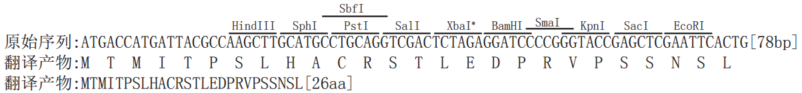

pUC19载体基本信息 出品公司: 别名: pUC19, 质粒类型: 大肠杆菌蛋白表达 表达水平: 高 克隆方法: 多克隆位点，限制性内切酶 载体大小: 5' 测序引物及序列: 3' 测序引物序列: 载体标签: 载体抗性: 氨苄 备注: General Utility:Cloning Copy Number:High (100+) Origin of Replication:pMB1 (high-copy mutant) Storage Conditions:10 mM Tris-HCl, 1 mM EDTA, pH 8.0 @ 25°C pUC19多克隆位点   MCS序列从左向右：  pUC19载体特征 pBR322_origin 1471 - 852 Ampicillin 2486 - 1626 lac_promoter 543 - 514 AmpR_promoter 2556 - 2528 M13_pUC_rev_primer 500 - 478 M13_reverse_primer 479 - 461 M13_forward20_primer 379 - 395 M13_pUC_fwd_primer 364 - 386 lacZ_a 398 - 250 pGEX_3_primer 51 - 29 Orf2 2486 - 1626 pUC19载体简介 pUC18 和 pUC19 大小只有 2686bp ，是最常用的质粒载体，其结构组成紧凑，几乎不含多余的 DNA 片段，GenBank注册号为 L08752（pUC18）和 X02514（pUC19）。由 pBR322 改造而来，其中 lacZ （MSC） 来自 M13mp18/19 图 3-4 是其质粒图谱。 这两个质粒的结构几乎是完全一样 的，只是多克隆位点的排列方向相反。这些质粒缺乏控制拷贝数的 rop 基因，因此其拷贝数达 500-700 。 pUC 系列载体含有一段 lacZ 蛋白氨基末端的部分编码序列，在特定的受体细胞中可表现 α-互补作用。因此在多克隆位点中插入了外源片段后，可通过 α-互补作用形成的蓝色和白色菌落筛选重组质粒。 pUC19 is a commonly used plasmid cloning vector in E.coli. The molecule is a small double-stranded circle, 2686 base pairs in length, and has a high copy number. pUC19 carries a 54 base-pair multiple cloning site polylinker that contains unique sites for 13 different hexanucleotide-specific restriction endonucleases. 用途： （1）克隆外源基因。 （2）利用lac promoter进行基因表达。 （3）使用M13 Primers进行DNA测序。 GenBank登录号 Name Entry Name Accession No. pUC18 SYNPUC18CV L09136 pUC19 SYNPUC19CV L09137 Product Source pUC19 is isolated from E. coli ER2272 (dam+ dcm+ EcoK M-) by a standard plasmid purification procedure. Polylinker DNA Sequence [GAATTCGAGCTCGGTACCCGGGGATCCTCTAGAGTCGACCTGCAGGCATGCAAGCTT] 反向互补后[AAGCTTGCATGCCTGCAGGTCGACTCTAGAGGATCCCCGGGTACCGAGCTCGAATTC] GENBANK Assession Number L09137 pUC19序列>pUC19 [length=2686]-revCom GACGAAAGGGCCTCGTGATACGCCTATTTTTATAGGTTAATGTCATGATAATAATGGTTTCTTAGACGTCAGGTGGCACTTTTCGGGGAAATGTGCGCGGAACCCCTATTTGTTTATTTTTCTAAATACATTCAAATATGTATCCGCTCATGAGACAATAACCCTGATAAATGCTTCAATAATATTGAAAAAGGAAGAGTATGAGTATTCAACATTTCCGTGTCGCCCTTATTCCCTTTTTTGCGGCATTTTGCCTTCCTGTTTTTGCTCACCCAGAAACGCTGGTGAAAGTAAAAGATGCTGAAGATCAGTTGGGTGCACGAGTGGGTTACATCGAACTGGATCTCAACAGCGGTAAGATCCTTGAGAGTTTTCGCCCCGAAGAACGTTTTCCAATGATGAGCACTTTTAAAGTTCTGCTATGTGGCGCGGTATTATCCCGTATTGACGCCGGGCAAGAGCAACTCGGTCGCCGCATACACTATTCTCAGAATGACTTGGTTGAGTACTCACCAGTCACAGAAAAGCATCTTACGGATGGCATGACAGTAAGAGAATTATGCAGTGCTGCCATAACCATGAGTGATAACACTGCGGCCAACTTACTTCTGACAACGATCGGAGGACCGAAGGAGCTAACCGCTTTTTTGCACAACATGGGGGATCATGTAACTCGCCTTGATCGTTGGGAACCGGAGCTGAATGAAGCCATACCAAACGACGAGCGTGACACCACGATGCCTGTAGCAATGGCAACAACGTTGCGCAAACTATTAACTGGCGAACTACTTACTCTAGCTTCCCGGCAACAATTAATAGACTGGATGGAGGCGGATAAAGTTGCAGGACCACTTCTGCGCTCGGCCCTTCCGGCTGGCTGGTTTATTGCTGATAAATCTGGAGCCGGTGAGCGTGGGTCTCGCGGTATCATTGCAGCACTGGGGCCAGATGGTAAGCCCTCCCGTATCGTAGTTATCTACACGACGGGGAGTCAGGCAACTATGGATGAACGAAATAGACAGATCGCTGAGATAGGTGCCTCACTGATTAAGCATTGGTAACTGTCAGACCAAGTTTACTCATATATACTTTAGATTGATTTAAAACTTCATTTTTAATTTAAAAGGATCTAGGTGAAGATCCTTTTTGATAATCTCATGACCAAAATCCCTTAACGTGAGTTTTCGTTCCACTGAGCGTCAGACCCCGTAGAAAAGATCAAAGGATCTTCTTGAGATCCTTTTTTTCTGCGCGTAATCTGCTGCTTGCAAACAAAAAAACCACCGCTACCAGCGGTGGTTTGTTTGCCGGATCAAGAGCTACCAACTCTTTTTCCGAAGGTAACTGGCTTCAGCAGAGCGCAGATACCAAATACTGTTCTTCTAGTGTAGCCGTAGTTAGGCCACCACTTCAAGAACTCTGTAGCACCGCCTACATACCTCGCTCTGCTAATCCTGTTACCAGTGGCTGCTGCCAGTGGCGATAAGTCGTGTCTTACCGGGTTGGACTCAAGACGATAGTTACCGGATAAGGCGCAGCGGTCGGGCTGAACGGGGGGTTCGTGCACACAGCCCAGCTTGGAGCGAACGACCTACACCGAACTGAGATACCTACAGCGTGAGCTATGAGAAAGCGCCACGCTTCCCGAAGGGAGAAAGGCGGACAGGTATCCGGTAAGCGGCAGGGTCGGAACAGGAGAGCGCACGAGGGAGCTTCCAGGGGGAAACGCCTGGTATCTTTATAGTCCTGTCGGGTTTCGCCACCTCTGACTTGAGCGTCGATTTTTGTGATGCTCGTCAGGGGGGCGGAGCCTATGGAAAAACGCCAGCAACGCGGCCTTTTTACGGTTCCTGGCCTTTTGCTGGCCTTTTGCTCACATGTTCTTTCCTGCGTTATCCCCTGATTCTGTGGATAACCGTATTACCGCCTTTGAGTGAGCTGATACCGCTCGCCGCAGCCGAACGACCGAGCGCAGCGAGTCAGTGAGCGAGGAAGCGGAAGAGCGCCCAATACGCAAACCGCCTCTCCCCGCGCGTTGGCCGATTCATTAATGCAGCTGGCACGACAGGTTTCCCGACTGGAAAGCGGGCAGTGAGCGCAACGCAATTAATGTGAGTTAGCTCACTCATTAGGCACCCCAGGCTTTACACTTTATGCTTCCGGCTCGTATGTTGTGTGGAATTGTGAGCGGATAACAATTTCACACAGGAAACAGCTATGACCATGATTACGCCAAGCTTGCATGCCTGCAGGTCGACTCTAGAGGATCCCCGGGTACCGAGCTCGAATTCACTGGCCGTCGTTTTACAACGTCGTGACTGGGAAAACCCTGGCGTTACCCAACTTAATCGCCTTGCAGCACATCCCCCTTTCGCCAGCTGGCGTAATAGCGAAGAGGCCCGCACCGATCGCCCTTCCCAACAGTTGCGCAGCCTGAATGGCGAATGGCGCCTGATGCGGTATTTTCTCCTTACGCATCTGTGCGGTATTTCACACCGCATATGGTGCACTCTCAGTACAATCTGCTCTGATGCCGCATAGTTAAGCCAGCCCCGACACCCGCCAACACCCGCTGACGCGCCCTGACGGGCTTGTCTGCTCCCGGCATCCGCTTACAGACAAGCTGTGACCGTCTCCGGGAGCTGCATGTGTCAGAGGTTTTCACCGTCATCACCGAAACGCGCGA
>lacZ 原始序列：
ATGACCATGATTACGCCAAGCTTGCATGCCTGCAGGTCGACTCTAGAGGATCCCCGGGTACCGAGCTCGAATTCACTGGCCGTCGTTTTACAACGTCGTGACTGGGAAAACCCTGGCGTTACCCAACTTAATCGCCTTGCAGCACATCCCCCTTTCGCCAGCTGGCGTAATAGCGAAGAGGCCCGCACCGATCGCCCTTCCCAACAGTTGCGCAGCCTGAATGGCGAATGGCGCCTGATGCGGTATTTTCTCCTTACGCATCTGTGCGGTATTTCACACCGCATATGGTGCACTCTCAGTACAATCTGCTCTGATGCCGCATAG[324bp]
翻译产物：
M T M I T P S L H A C R S T L E D P R V P S S N S L A V V L Q R R D W E N P G V T Q L N R L A A H P P F A S W R N S E E A R T D R P S Q Q L R S L N G E W R L M R Y F L L T H L C G I S H R I W C T L S T I C S D A A -
翻译产物：MTMITPSLHACRSTLEDPRVPSSNSLAVVLQRRDWENPGVTQLNRLAAHPPFASWRNSEEARTDRPSQQLRSLNGEWRLMRYFLLTHLCGISHRIWCTLSTICSDAA[107aa]
>sig_peptide complement(2418..2486) /gene="bla"
/note="required for secretion to the periplasm; cleaved off to form the mature beta-lactamase protein."
原始序列:ATGAGTATTCAACATTTCCGTGTCGCCCTTATTCCCTTTTTTGCGGCATTTTGCCTTCCTGTTTTTGCT[69bp]
翻译产物:M S I Q H F R V A L I P F F A A F C L P V F A
翻译产物:MSIQHFRVALIPFFAAFCLPVFA[23aa]
>pUC19 [length=2686] [version=09-MAY-2008] [topology=circular] Cloning vector pUC19, complete sequence. TCGCGCGTTTCGGTGATGACGGTGAAAACCTCTGACACATGCAGCTCCCGGAGACGGTCACAGCTTGTCTGTAAGCGGATGCCGGGAGCAGACAAGCCCGTCAGGGCGCGTCAGCGGGTGTTGGCGGGTGTCGGGGCTGGCTTAACTATGCGGCATCAGAGCAGATTGTACTGAGAGTGCACCATATGCGGTGTGAAATACCGCACAGATGCGTAAGGAGAAAATACCGCATCAGGCGCCATTCGCCATTCAGGCTGCGCAACTGTTGGGAAGGGCGATCGGTGCGGGCCTCTTCGCTATTACGCCAGCTGGCGAAAGGGGGATGTGCTGCAAGGCGATTAAGTTGGGTAACGCCAGGGTTTTCCCAGTCACGACGTTGTAAAACGACGGCCAGTGAATTCGAGCTCGGTACCCGGGGATCCTCTAGAGTCGACCTGCAGGCATGCAAGCTTGGCGTAATCATGGTCATAGCTGTTTCCTGTGTGAAATTGTTATCCGCTCACAATTCCACACAACATACGAGCCGGAAGCATAAAGTGTAAAGCCTGGGGTGCCTAATGAGTGAGCTAACTCACATTAATTGCGTTGCGCTCACTGCCCGCTTTCCAGTCGGGAAACCTGTCGTGCCAGCTGCATTAATGAATCGGCCAACGCGCGGGGAGAGGCGGTTTGCGTATTGGGCGCTCTTCCGCTTCCTCGCTCACTGACTCGCTGCGCTCGGTCGTTCGGCTGCGGCGAGCGGTATCAGCTCACTCAAAGGCGGTAATACGGTTATCCACAGAATCAGGGGATAACGCAGGAAAGAACATGTGAGCAAAAGGCCAGCAAAAGGCCAGGAACCGTAAAAAGGCCGCGTTGCTGGCGTTTTTCCATAGGCTCCGCCCCCCTGACGAGCATCACAAAAATCGACGCTCAAGTCAGAGGTGGCGAAACCCGACAGGACTATAAAGATACCAGGCGTTTCCCCCTGGAAGCTCCCTCGTGCGCTCTCCTGTTCCGACCCTGCCGCTTACCGGATACCTGTCCGCCTTTCTCCCTTCGGGAAGCGTGGCGCTTTCTCATAGCTCACGCTGTAGGTATCTCAGTTCGGTGTAGGTCGTTCGCTCCAAGCTGGGCTGTGTGCACGAACCCCCCGTTCAGCCCGACCGCTGCGCCTTATCCGGTAACTATCGTCTTGAGTCCAACCCGGTAAGACACGACTTATCGCCACTGGCAGCAGCCACTGGTAACAGGATTAGCAGAGCGAGGTATGTAGGCGGTGCTACAGAGTTCTTGAAGTGGTGGCCTAACTACGGCTACACTAGAAGAACAGTATTTGGTATCTGCGCTCTGCTGAAGCCAGTTACCTTCGGAAAAAGAGTTGGTAGCTCTTGATCCGGCAAACAAACCACCGCTGGTAGCGGTGGTTTTTTTGTTTGCAAGCAGCAGATTACGCGCAGAAAAAAAGGATCTCAAGAAGATCCTTTGATCTTTTCTACGGGGTCTGACGCTCAGTGGAACGAAAACTCACGTTAAGGGATTTTGGTCATGAGATTATCAAAAAGGATCTTCACCTAGATCCTTTTAAATTAAAAATGAAGTTTTAAATCAATCTAAAGTATATATGAGTAAACTTGGTCTGACAGTTACCAATGCTTAATCAGTGAGGCACCTATCTCAGCGATCTGTCTATTTCGTTCATCCATAGTTGCCTGACTCCCCGTCGTGTAGATAACTACGATACGGGAGGGCTTACCATCTGGCCCCAGTGCTGCAATGATACCGCGAGACCCACGCTCACCGGCTCCAGATTTATCAGCAATAAACCAGCCAGCCGGAAGGGCCGAGCGCAGAAGTGGTCCTGCAACTTTATCCGCCTCCATCCAGTCTATTAATTGTTGCCGGGAAGCTAGAGTAAGTAGTTCGCCAGTTAATAGTTTGCGCAACGTTGTTGCCATTGCTACAGGCATCGTGGTGTCACGCTCGTCGTTTGGTATGGCTTCATTCAGCTCCGGTTCCCAACGATCAAGGCGAGTTACATGATCCCCCATGTTGTGCAAAAAAGCGGTTAGCTCCTTCGGTCCTCCGATCGTTGTCAGAAGTAAGTTGGCCGCAGTGTTATCACTCATGGTTATGGCAGCACTGCATAATTCTCTTACTGTCATGCCATCCGTAAGATGCTTTTCTGTGACTGGTGAGTACTCAACCAAGTCATTCTGAGAATAGTGTATGCGGCGACCGAGTTGCTCTTGCCCGGCGTCAATACGGGATAATACCGCGCCACATAGCAGAACTTTAAAAGTGCTCATCATTGGAAAACGTTCTTCGGGGCGAAAACTCTCAAGGATCTTACCGCTGTTGAGATCCAGTTCGATGTAACCCACTCGTGCACCCAACTGATCTTCAGCATCTTTTACTTTCACCAGCGTTTCTGGGTGAGCAAAAACAGGAAGGCAAAATGCCGCAAAAAAGGGAATAAGGGCGACACGGAAATGTTGAATACTCATACTCTTCCTTTTTCAATATTATTGAAGCATTTATCAGGGTTATTGTCTCATGAGCGGATACATATTTGAATGTATTTAGAAAAATAAACAAATAGGGGTTCCGCGCACATTTCCCCGAAAAGTGCCACCTGACGTCTAAGAAACCATTATTATCATGACATTAACCTATAAAAATAGGCGTATCACGAGGCCCTTTCGTCpUC19载体序列 NEB pUC19 LOCUS pUC19 2686 bp DNA circular 18-OCT-2007 DEFINITION Cloning vector pUC19, complete sequence. ACCESSION VERSION KEYWORDS . SOURCE Cloning vector pUC19 ORGANISM Cloning vector pUC19 other sequences; artificial sequences; vectors. REFERENCE 1 (bases 1 to 2686) AUTHORS New England Biolabs. TITLE Direct Submission JOURNAL Submitted (18-OCT-2007) Research Department, New England Biolabs, 240 County Road, Ipswich, MA 01938, USA COMMENT See also GenBank accession L09137. FEATURES Location/Qualifiers source 1..2686 /organism="Cloning vector pUC19" /mol_type="other DNA" gene complement(146..469) /gene="lacZalpha" CDS complement(146..469) /gene="lacZalpha" /codon_start=1 /product="beta-galactosidase alpha fragment" /translation="MTMITPSLHACRSTLEDPRVPSSNSLAVVLQRRDWENPGVTQLN RLAAHPPFASWRNSEEARTDRPSQQLRSLNGEWRLMRYFLLTHLCGISHRIWCTLSTI CSDAA" misc_feature 396..452 /gene="lacZalpha" /note="multiple cloning site (EcoRI-HindIII)" -10_signal complement(514..519) /note="Plac promoter (drives lacZalpha; counter-clockwise); TATGTT" -35_signal complement(538..543) /note="Plac promoter (drives lacZalpha; counter-clockwise); TTTACA" protein_bind complement(563..575) /note="CAP protein binding site" /bound_moiety="catabolite activator protein (CAP)" rep_origin complement(867..1455) /note="pMB1 origin of replication (counter-clockwise) (RNAII -35 to RNA/DNA switch point)" misc_RNA complement(867..1419) /note="RNAII transcript (complementary strand)" -35_signal 1273..1278 /note="RNAI promoter (clockwise); TTGAAG" -10_signal 1295..1300 /note="RNAI promoter (clockwise); GCTACA" misc_RNA 1309..1416 /note="RNAI transcript" -10_signal complement(1429..1434) /note="RNAII promoter (counter-clockwise); CGTAAT" -35_signal complement(1450..1455) /note="RNAII promoter (counter-clockwise); TTGAGA" gene complement(1626..2486) /gene="bla" CDS complement(1626..2486) /gene="bla" /note="ampR (confers resistance to ampicillin)" /codon_start=1 /product="beta-lactamase" /translation="MSIQHFRVALIPFFAAFCLPVFAHPETLVKVKDAEDQLGARVGY IELDLNSGKILESFRPEERFPMMSTFKVLLCGAVLSRIDAGQEQLGRRIHYSQNDLVE YSPVTEKHLTDGMTVRELCSAAITMSDNTAANLLLTTIGGPKELTAFLHNMGDHVTRL DRWEPELNEAIPNDERDTTMPVAMATTLRKLLTGELLTLASRQQLIDWMEADKVAGPL LRSALPAGWFIADKSGAGERGSRGIIAALGPDGKPSRIVVIYTTGSQATMDERNRQIA EIGASLIKHW" sig_peptide complement(2418..2486) /gene="bla" /note="required for secretion to the periplasm; cleaved off to form the mature beta-lactamase protein." -10_signal complement(2530..2535) /note="bla promoter (counter-clockwise); GAGACA" -35_signal complement(2551..2556) /note="bla promoter (counter-clockwise); TTCAAA" BASE COUNT 667 a 675 c 685 g 659 t ORIGIN 1 tcgcgcgttt cggtgatgac ggtgaaaacc tctgacacat gcagctcccg gagacggtca 61 cagcttgtct gtaagcggat gccgggagca gacaagcccg tcagggcgcg tcagcgggtg 121 ttggcgggtg tcggggctgg cttaactatg cggcatcaga gcagattgta ctgagagtgc 181 accatatgcg gtgtgaaata ccgcacagat gcgtaaggag aaaataccgc atcaggcgcc 241 attcgccatt caggctgcgc aactgttggg aagggcgatc ggtgcgggcc tcttcgctat 301 tacgccagct ggcgaaaggg ggatgtgctg caaggcgatt aagttgggta acgccagggt 361 tttcccagtc acgacgttgt aaaacgacgg ccagtgaatt cgagctcggt acccggggat 421 cctctagagt cgacctgcag gcatgcaagc ttggcgtaat catggtcata gctgtttcct 481 gtgtgaaatt gttatccgct cacaattcca cacaacatac gagccggaag cataaagtgt 541 aaagcctggg gtgcctaatg agtgagctaa ctcacattaa ttgcgttgcg ctcactgccc 601 gctttccagt cgggaaacct gtcgtgccag ctgcattaat gaatcggcca acgcgcgggg 661 agaggcggtt tgcgtattgg gcgctcttcc gcttcctcgc tcactgactc gctgcgctcg 721 gtcgttcggc tgcggcgagc ggtatcagct cactcaaagg cggtaatacg gttatccaca 781 gaatcagggg ataacgcagg aaagaacatg tgagcaaaag gccagcaaaa ggccaggaac 841 cgtaaaaagg ccgcgttgct ggcgtttttc cataggctcc gcccccctga cgagcatcac 901 aaaaatcgac gctcaagtca gaggtggcga aacccgacag gactataaag ataccaggcg 961 tttccccctg gaagctccct cgtgcgctct cctgttccga ccctgccgct taccggatac 1021 ctgtccgcct ttctcccttc gggaagcgtg gcgctttctc atagctcacg ctgtaggtat 1081 ctcagttcgg tgtaggtcgt tcgctccaag ctgggctgtg tgcacgaacc ccccgttcag 1141 cccgaccgct gcgccttatc cggtaactat cgtcttgagt ccaacccggt aagacacgac 1201 ttatcgccac tggcagcagc cactggtaac aggattagca gagcgaggta tgtaggcggt 1261 gctacagagt tcttgaagtg gtggcctaac tacggctaca ctagaagaac agtatttggt 1321 atctgcgctc tgctgaagcc agttaccttc ggaaaaagag ttggtagctc ttgatccggc 1381 aaacaaacca ccgctggtag cggtggtttt tttgtttgca agcagcagat tacgcgcaga 1441 aaaaaaggat ctcaagaaga tcctttgatc ttttctacgg ggtctgacgc tcagtggaac 1501 gaaaactcac gttaagggat tttggtcatg agattatcaa aaaggatctt cacctagatc 1561 cttttaaatt aaaaatgaag ttttaaatca atctaaagta tatatgagta aacttggtct 1621 gacagttacc aatgcttaat cagtgaggca cctatctcag cgatctgtct atttcgttca 1681 tccatagttg cctgactccc cgtcgtgtag ataactacga tacgggaggg cttaccatct 1741 ggccccagtg ctgcaatgat accgcgagac ccacgctcac cggctccaga tttatcagca 1801 ataaaccagc cagccggaag ggccgagcgc agaagtggtc ctgcaacttt atccgcctcc 1861 atccagtcta ttaattgttg ccgggaagct agagtaagta gttcgccagt taatagtttg 1921 cgcaacgttg ttgccattgc tacaggcatc gtggtgtcac gctcgtcgtt tggtatggct 1981 tcattcagct ccggttccca acgatcaagg cgagttacat gatcccccat gttgtgcaaa 2041 aaagcggtta gctccttcgg tcctccgatc gttgtcagaa gtaagttggc cgcagtgtta 2101 tcactcatgg ttatggcagc actgcataat tctcttactg tcatgccatc cgtaagatgc 2161 ttttctgtga ctggtgagta ctcaaccaag tcattctgag aatagtgtat gcggcgaccg 2221 agttgctctt gcccggcgtc aatacgggat aataccgcgc cacatagcag aactttaaaa 2281 gtgctcatca ttggaaaacg ttcttcgggg cgaaaactct caaggatctt accgctgttg 2341 agatccagtt cgatgtaacc cactcgtgca cccaactgat cttcagcatc ttttactttc 2401 accagcgttt ctgggtgagc aaaaacagga aggcaaaatg ccgcaaaaaa gggaataagg 2461 gcgacacgga aatgttgaat actcatactc ttcctttttc aatattattg aagcatttat 2521 cagggttatt gtctcatgag cggatacata tttgaatgta tttagaaaaa taaacaaata 2581 ggggttccgc gcacatttcc ccgaaaagtg ccacctgacg tctaagaaac cattattatc 2641 atgacattaa cctataaaaa taggcgtatc acgaggccct ttcgtc // ---------------- http://wenku.baidu.com/view/4eb8730002020740be1e9b9e.html http://blog.sina.com.cn/s/blog_56ef0c590100hdhr.html http://en.wikipedia.org/wiki/PUC19 http://tigomall.blog.163.com/blog/static/2127780792015263221239/